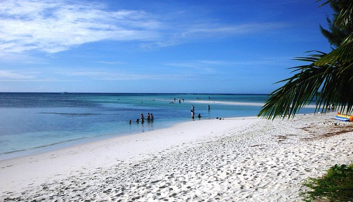
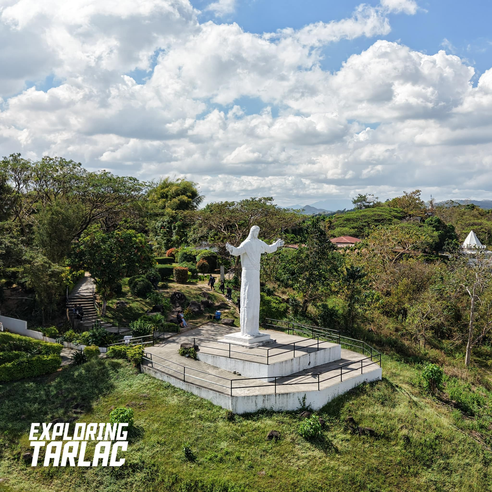
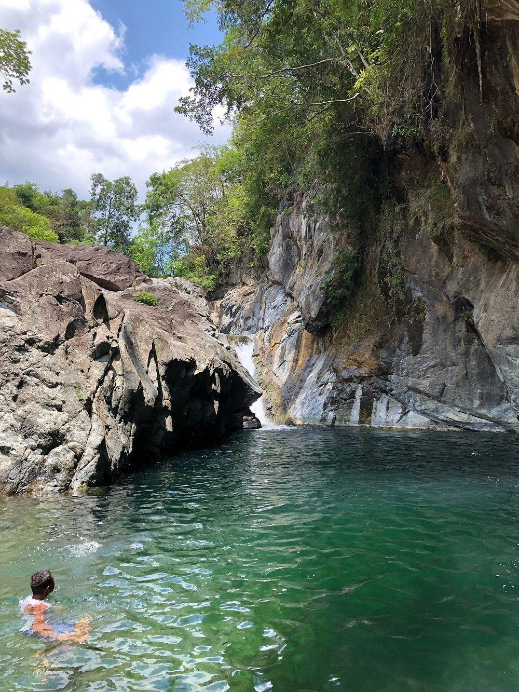
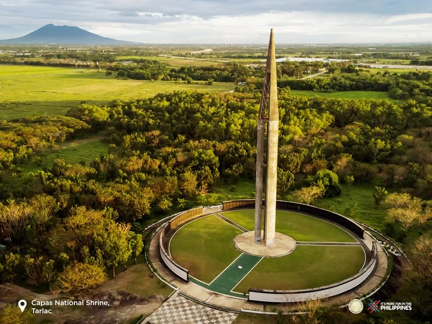
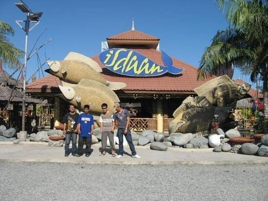
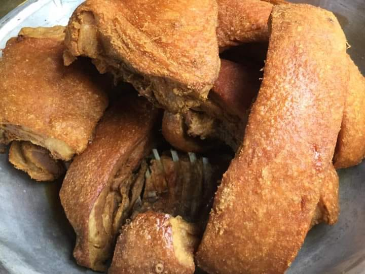
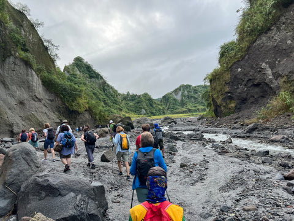
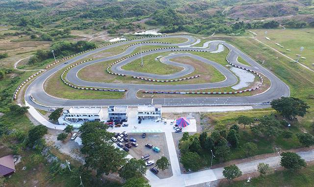

Featured Categories
Explore the diverse experiences waiting for you across the province

Saipan Beach
Experience a unique local getaway at Saipan River beach in San Jose. Relax on rocky banks alongside crystal-clear flowing freshwaters.

Monasterio de Tarlac
Perched atop Mt. Resurrection in San Jose, this popular spiritual mountain retreat houses a colossal 30-foot statue of the Risen Christ.

Canding Falls
Hidden in San Clemente, Canding Falls offers an amazing jungle oasis ideal for adventurous cliff diving, cold water swimming, and outdoor picnicking.

Capas National Shrine
A solemn historical sanctuary dedicated to the brave Filipino and American soldiers who endured the brutal Bataan Death March during WWII.

Isdaan Village
A vibrant floating theme-park restaurant in Gerona. Features beautiful structural islands, giant cultural statues, and fun boat rides.

Camiling Chicharon Hub
Taste the best culinary heritage of Tarlac! Famous for its signature crispy, deep-fried pork Chicharon Camiling and native rice cakes.

Mount Pinatubo 4x4 Trail
Hop on a rugged 4x4 vehicle across volcanic landscapes, trailing through lahar canyons leading up to the epic Mount Pinatubo crater lake.

Bulsa River Kayaking
Brace yourself for action! Guided eco-tours organize thrilling rapid white-water kayaking courses along the pristine canyons of San Jose.

Tarlac Recreation Park
A massive 78-hectare complex outfitted for extreme ATV trail drives, mountain biking routes, dune buggy rentals, and open campsites.